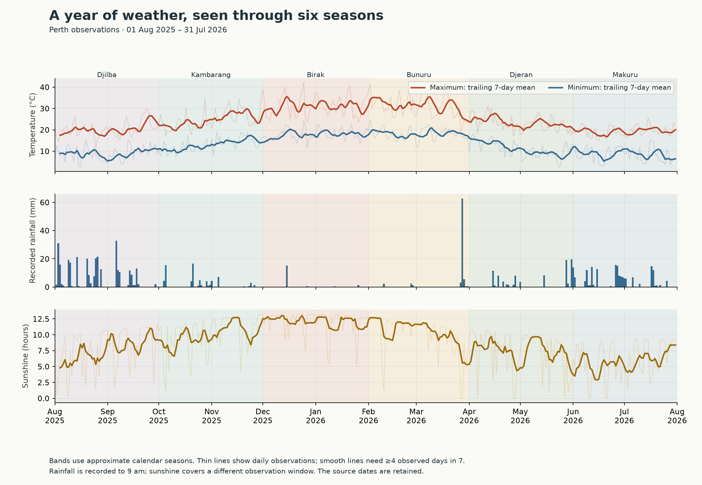
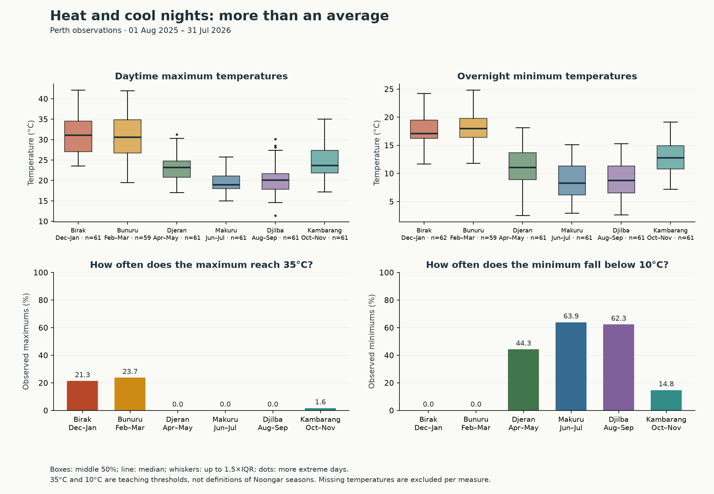
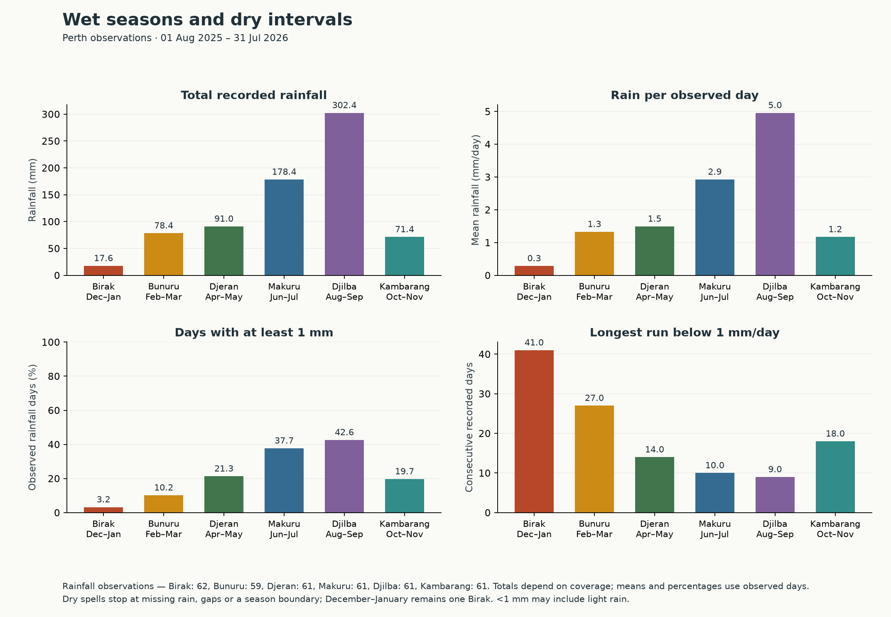
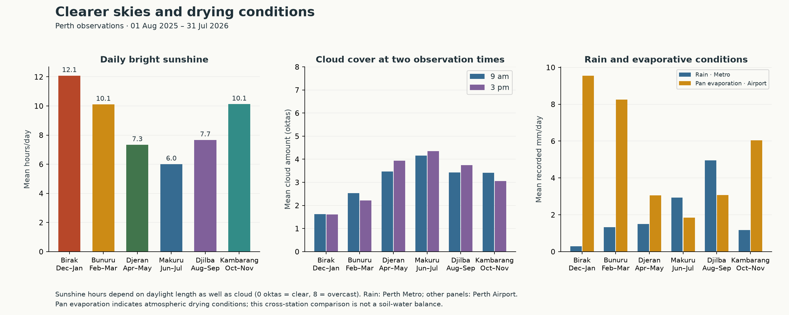
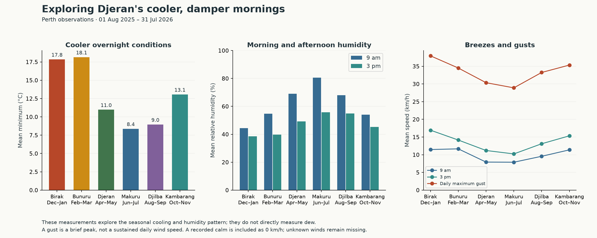
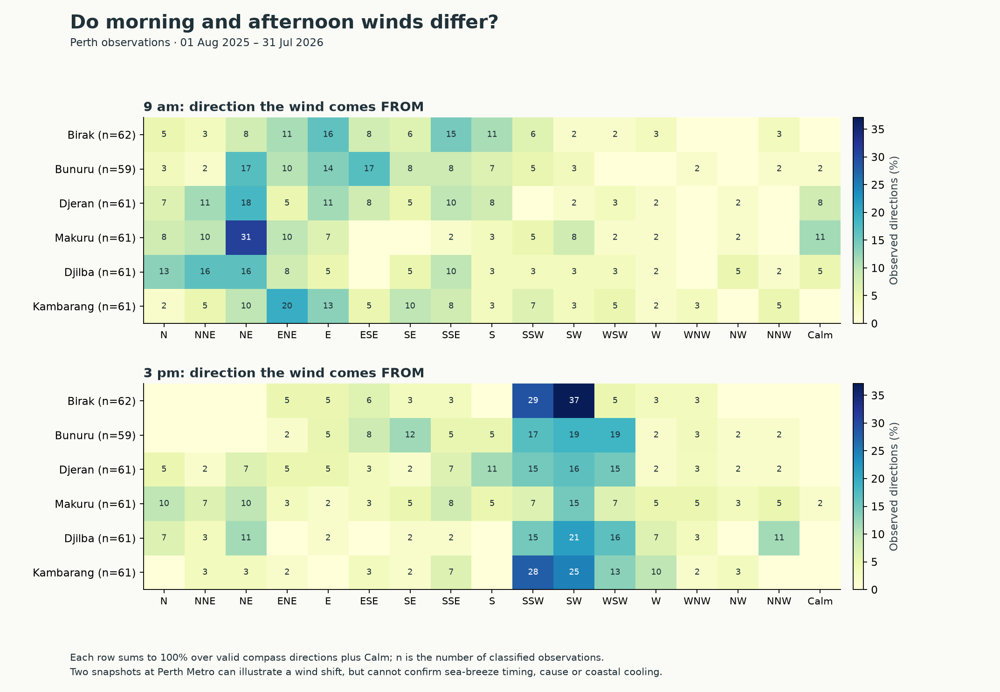
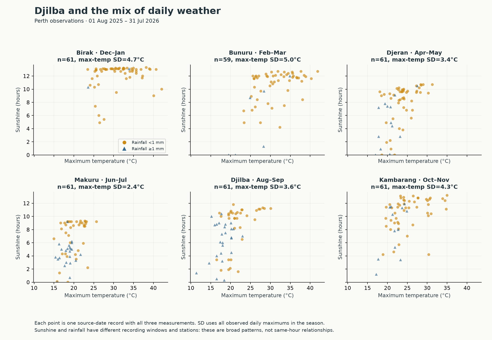
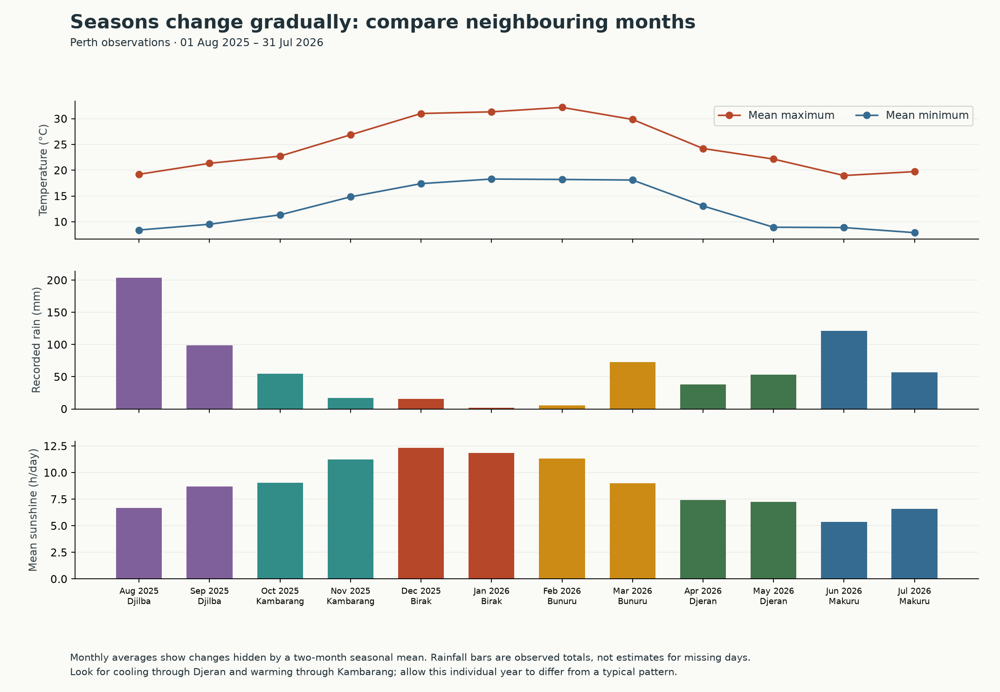

One year.
Six seasonal perspectives.
Perth · 01 Aug 2025 – 31 Jul 2026 · 365 daily records
Explore temperature, rain, sunshine and winds alongside the Bureau's Nyoongar seasonal calendar.
How to read this demonstration
The Noongar calendar belongs to the peoples of south-west Australia. Its seasons respond to local environmental signs and can vary in length; the two-month bins here are an approximate teaching guide. Weather data cannot represent the full ecological and cultural knowledge in the calendar.
This is a descriptive comparison of the supplied Perth data, not a long-term climatology, a test of traditional knowledge, or a rule for detecting the start of a season. Results that differ from the broad descriptions remain visible.
| BirakDec–Jan | Warming and easing rain; morning easterlies can give way to afternoon south-westerlies. |
|---|---|
| BunuruFeb–Mar | Intense heat, little rain, and coastal afternoon breezes. |
| DjeranApr–May | Relief from heat, cooler damp mornings, and gentler winds. |
| MakuruJun–Jul | Cold, wet conditions, with winds from the west and south. |
| DjilbaAug–Sep | A transition with a mixture of cold, clear, wet, windy and warmer days. |
| KambarangOct–Nov | Warming weather and longer dry intervals. |
Weather descriptions paraphrased from the linked Bureau calendar. Chart colours are presentation choices.
What this sample shows
- The highest seasonal mean maximum was 31.2°C in Birak. Bunuru averaged 31.0°C. Mean minimums were 17.8°C in Birak and 18.1°C in Bunuru; which season is hottest can depend on the measure. This sample need not exactly match the broad description.
- Makuru had the lowest mean maximum (19.4°C). Djilba had the largest observed rainfall total (302.4 mm). Makuru recorded 178.4 mm and 37.7% wet days.
- From Bunuru to Djeran, the mean minimum changed from 18.1°C to 11.0°C, while 9 am relative humidity changed from 54.7% to 69.1%. These are not direct dew measurements.
- From Djilba to Kambarang, the mean maximum changed from 20.3°C to 24.8°C. The longest within-season run below 1 mm/day changed from 9 to 18 days.
- The narrowly defined morning-east to afternoon-south-west pattern occurred on 19.4% of paired observations in Birak and 15.3% in Bunuru. See the full direction distributions before drawing conclusions.
A year of weather, seen through six seasons

Bands use approximate calendar seasons. Thin lines show daily observations; smooth lines need ≥4 observed days in 7.
Rainfall is recorded to 9 am; sunshine covers a different observation window. The source dates are retained.


Heat and cool nights: more than an average

Boxes: middle 50%; line: median; whiskers: up to 1.5×IQR; dots: more extreme days.
35°C and 10°C are teaching thresholds, not definitions of Noongar seasons. Missing temperatures are excluded per measure.


Wet seasons and dry intervals

Rainfall observations — Birak: 62, Bunuru: 59, Djeran: 61, Makuru: 61, Djilba: 61, Kambarang: 61. Totals depend on coverage; means and percentages use observed days.
Dry spells stop at missing rain, gaps or a season boundary; December–January remains one Birak. <1 mm may include light rain.


Clearer skies and drying conditions

Sunshine hours depend on daylight length as well as cloud (0 oktas = clear, 8 = overcast). Rain: Perth Metro; other panels: Perth Airport.
Pan evaporation indicates atmospheric drying conditions; this cross-station comparison is not a soil-water balance.


Exploring Djeran's cooler, damper mornings

These measurements explore the seasonal cooling and humidity pattern; they do not directly measure dew.
A gust is a brief peak, not a sustained daily wind speed. A recorded calm is included as 0 km/h; unknown winds remain missing.


Do morning and afternoon winds differ?

Each row sums to 100% over valid compass directions plus Calm; n is the number of classified observations.
Two snapshots at Perth Metro can illustrate a wind shift, but cannot confirm sea-breeze timing, cause or coastal cooling.


Djilba and the mix of daily weather

Each point is one source-date record with all three measurements. SD uses all observed daily maximums in the season.
Sunshine and rainfall have different recording windows and stations: these are broad patterns, not same-hour relationships.


Seasons change gradually: compare neighbouring months

Monthly averages show changes hidden by a two-month seasonal mean. Rainfall bars are observed totals, not estimates for missing days.
Look for cooling through Djeran and warming through Kambarang; allow this individual year to differ from a typical pattern.


Compare the six seasons
| Records | Max temp n | Rain n | Min °C | Max °C | Rain mm | Wet days % | Sun h/day | Dry run days | |
|---|---|---|---|---|---|---|---|---|---|
| Season | |||||||||
| Birak | 62 | 61 | 62 | 17.8 | 31.2 | 17.6 | 3.2 | 12.1 | 41 |
| Bunuru | 59 | 59 | 59 | 18.1 | 31.0 | 78.4 | 10.2 | 10.1 | 27 |
| Djeran | 61 | 61 | 61 | 11.0 | 23.2 | 91.0 | 21.3 | 7.3 | 14 |
| Makuru | 61 | 61 | 61 | 8.4 | 19.4 | 178.4 | 37.7 | 6.0 | 10 |
| Djilba | 61 | 61 | 61 | 9.0 | 20.3 | 302.4 | 42.6 | 7.7 | 9 |
| Kambarang | 61 | 61 | 61 | 13.1 | 24.8 | 71.4 | 19.7 | 10.1 | 18 |
Temperatures and sunshine are means; rain is a total. Wet = ≥1 mm; dry run = consecutive recorded days below 1 mm within a season.
Full seasonal statistics · Monthly statistics · Paired wind-shift counts · Daily data with seasons
Coverage, methods and limitations
- 365 unique source dates across 365 calendar days; 0 absent dates. No weather values were filled or interpolated.
- Each mean and percentage uses observations available for that measurement. Counts are in the exported tables. Zero rainfall is an observation; missing rainfall is unknown.
- Totals are observed totals and are affected by season length and missing records. For this sample, compare daily means and wet-day percentages too.
- Raw-file metadata assigns temperature, humidity, wind, pressure and rain to Perth Metro (009225), and sunshine, cloud and evaporation to Perth Airport (009021).
- Recorded dates are retained. Rainfall and pan evaporation cover the 24 hours to 9 am; sunshine covers the 24 hours to midnight. See the Bureau's observation notes. Same-row measurements need not describe precisely the same hours.
- Daily minimums cover the period ending at 9 am, while maximums cover the period starting at 9 am. The exported MeanDailyRange is a same-source-date difference, not a strictly coincident diurnal range.
- Sunshine hours also change with available daylight. Cloud observations offer a separate view of sky conditions.
- Illustrative thresholds: wet day ≥1 mm, hot day maximum ≥35°C, cool night minimum <10°C. These are not cultural season definitions.
- Wind directions describe where wind comes from. The paired proxy requires 9 am ENE/E/ESE and 3 pm SSW/SW/WSW on a date with both directions known (including calm as a valid observation).
- Dry runs end at a wet day, missing rain, a gap in dates, or the end of a season occurrence. December and January form one Birak. Runs may be truncated at the dataset edges.
- Seasonal summaries pool available occurrences if additional years are later supplied; totals would then need year-by-year comparisons. This report currently describes the local sample only.
Measurement coverage
| ObservedDays | MissingDays | CoveragePercent | |
|---|---|---|---|
| Measurement | |||
| MinTemp | 365 | 0 | 100.0 |
| MaxTemp | 364 | 1 | 99.7 |
| Rainfall | 365 | 0 | 100.0 |
| Sunshine | 365 | 0 | 100.0 |
| Evaporation | 362 | 3 | 99.2 |
| MaxGustSpeed | 363 | 2 | 99.5 |
| MaxGustDirection | 363 | 2 | 99.5 |
| Temp9am | 365 | 0 | 100.0 |
| Humidity9am | 365 | 0 | 100.0 |
| Cloud9am | 365 | 0 | 100.0 |
| WindDirection9am | 365 | 0 | 100.0 |
| WindSpeed9am | 365 | 0 | 100.0 |
| Pressure9am | 365 | 0 | 100.0 |
| Temp3pm | 365 | 0 | 100.0 |
| Humidity3pm | 365 | 0 | 100.0 |
| Cloud3pm | 365 | 0 | 100.0 |
| WindDirection3pm | 365 | 0 | 100.0 |
| WindSpeed3pm | 365 | 0 | 100.0 |
| Pressure3pm | 365 | 0 | 100.0 |